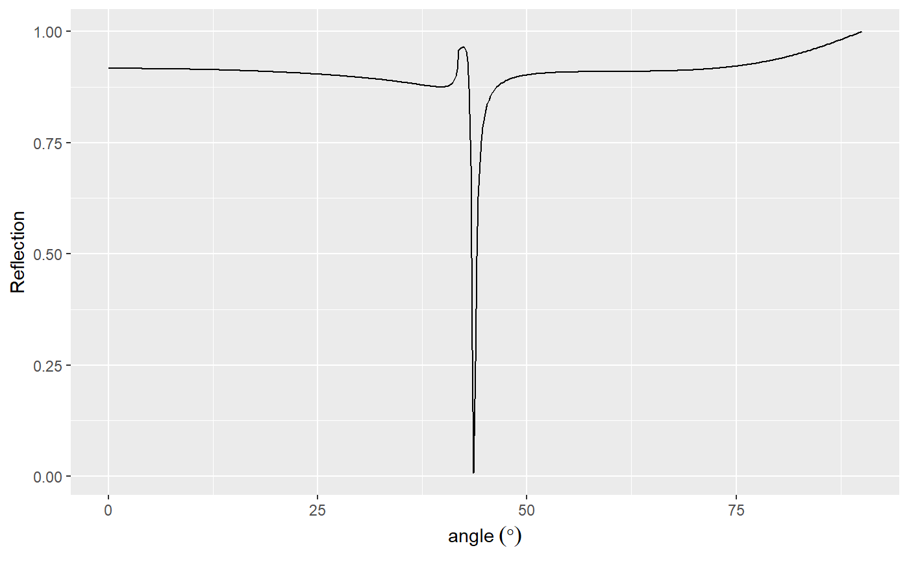

Calculation of reflection from multilayer films using the transfer matrix method.
This package uses the transfer matrix method outlined in Pedrotti, Pedrotti and Pedrotti to calculate the reflection and transmission of plane polarised light from an arbitary stack of thin films.
To Install
From within an R session, use the devtools package like so:
devtools::install_github('tjconstant/mlfilms')The Layers
All layers are defined as a list of parameters, with the layers listed sequentially from top (incident side) to bottom (exit side). The list must contain the refractive indexes as index and the thicknesses of the layers as thickness. You may also optionally include a number of repetitions of the stack under repetitions.
For Example, for the following thin film stack shown in the diagram, with the listed thicknesses (t) and refractive indexes (n),
example_figure
The appropriate stack would be as follows,
mystack <- list(index = c(1.33, 1.75, 1.2, 1.3 + 1i),
thickness = c(50e-9, 50e-9, 30e-9, 27e-9),
repetitions = 1)Notice the incident and exit mediums are not part of the stack, and so their refracive indexes are not listed in the mystack list. They will be specificed when the optical response function is called (see below).
Example
As a quick example, here is how you’d calculate and plot the reflection from a thin silver film through a prism. This is a standard experiment in our lab which results in a reflectivity minima associated with a surface plasmon excitation.
We simply construct a stack with an appropriate refractive index and thickness (45 nm), and calculate the reflection (as a funciton of polar angle, setting the incident medium to glass.
library(mlfilms)
mystack2 <- list(index = 0.13+4i,
thickness = 45e-9)
plasmon <- angle_scan(mystack2,
incident_medium.index = 1.5 + 0i)#> Warning in check_repetitions(layers): Number of repetitions not specified,
#> defaulting to 1.Plotting the result using ggplot shows a critical edge related to the onset of total internal reflection in the prism, and the reflectivity minima resulting from a surface plasmon excitation on the silver/air interface.
library(tidyverse)
plasmon %>%
ggplot(aes(x = angle, y = Reflection))+
geom_line() +
xlab(expression(angle~(degree)))